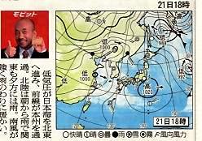
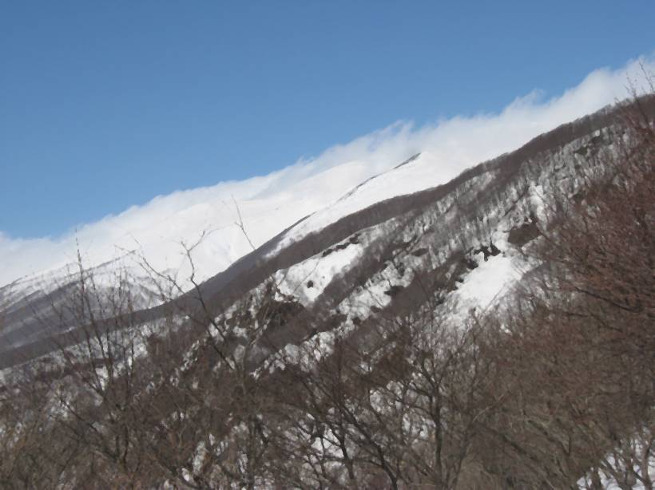

|
|||||||||||||||||||||||||||
|
|||||||||||||||||||||||||||
|
鳥海山月山森 |
| 開 催 日 | ２００９年３月２０〜２２日 | |||
| リーダー | 高橋毅 | |||
| 報 告 者 | 小林義亮 | |||
| HP制作者 | 小林義亮 | |||
| 参加者数 | １４名 （会員１１名、ゲスト３名） | |||
| いよいよ春スキーの本番の季節に突入。今回３連休の日取りも良く、春スキーのメッカ、鳥海山へと向かった。３月１９日（金）は季節はずれの暖かさで、東北も最高気温２５度の暖かさ。しかし夜から雨。山行が危ぶまれたが移動性高気圧がやってきて、２０日は山に近づくにつれて上天気となり、快適なスキーが楽しめた。２１日（土）は移動高がやってきて登山日和。２２日は一転して曇のち雨、ピークを狙うことは諦めて軽いツアーに留めて早めに雨の中を帰宅。雨が止んだ当地は休み明けから冬型に戻り厳しい山が復活した。３連休、移りやすい春のツアーとしては天気の日取りも良かった。鳥海山に通って数年、やっとこの山の良さの一端が分かってきたような気がする。日本海からの季節風がもたらす豪雪は記録的な暖冬でもこの季節、標高３００メートル以上をすっかり残雪の世界とさせる。ここを起点に５００メートルも登ればそこは無立木の大斜面、季節が進んで道路が開通すれば更に上部から高みへと進み、初夏、都会人が雪のことをすっかり忘れてしまった頃でも雪渓状の大斜面で夏スキーが楽しめる。その上複雑な火山群からなる山容には浸食が進んだ斜面がいたるところに快適なスロープを提供する。こんな山は日本にそうザラにあるものではない。「好きです 鳥海山」というキャッチフレーズにはまりそうだ。 |
| １９日は南の高気圧で暖気が入り異常な暖かさ。 | ２０日、雨の後は移動高で思わぬ晴天に喝采した。 |
|  | |
| ２１日は移動高が本州を被い、風はあるが好天、予定の月山森まで標高差１３５０Mを稼いだ。 | ２２日は曇り空がひろがり、予報通りに１０時過ぎには雨が降り出したので早々に下山。 |
| １日目 ３月２０日（金） |
| ７時に酒田のバスターミナルに集合、昨年全国集会の宿である「しらい自然館」を経由して湯ノ台標高５００メートル地点から鳳来山（８５８メートル）を目指す。 |
 |
A |
| 懐かしい「しらい自然館」。９時にならないと係員が来ないので、寒い中、館前で待つことに。 | A | コース途中にある南高ヒュッテ。初々しい高校生登山部員が３年の追出し山行中だった。 |
| A |
| 南校ヒュッテからはブナ林。鳳来山直下は相当の急斜面、慎重に登る。スリップする仲間もいた。 | A | 急斜面を登り切ると山頂へと続く緩斜面となって展望も開ける。滝の小屋へのルートも見える。 |
| A |  |
| 鳥海山頂はまだ雲が残っている。風も強そう。 | A | 同左 |
| ２日目 ３月２１日（土） |
| 快晴。明日は雨の予報なので今日は大切にする。月山森への上りはアイスバーンが予想されたが行けるところまでと進む。その内にだんだん欲が出て、結局月山森まで上る。月光川ダム上流３００メートル付近８：０５→鈴木小屋10:0０ ここで１時間近く休憩し上部のアイスバーンが緩むのを待つ。小屋出１０：５５→月山森13:30 ここでシールを外して滑降14:00→駐車場15:00 |
| A |
| 出発地点。かってスキー場だった斜面越しに最奥が月山森。近いようだが１３５０メートルもの標高差がある。 | A | 出発準備に余念がない仲間達。今野さんの愛犬リキも加わる。本当に可愛い犬だ。 |
| A |
| 枯れた葉っぱがのっている熊だな。クマが木の上で枝を折って木の実を食べ、その枝を尻の下に敷いていって棚状になったもの。葉が着いていて落ちない。これは紅葉して落葉する前に折りとったため。紅葉による落葉は葉柄の付け根に離層という組織ができて落葉に至るが、熊だなの枝は紅葉前に折られたため離層ができず落葉しない。 |
A | スキー熱盛んな時に計画されたスキー場跡である。そういえば鳥海山の山麓にはスキー場は見られない。開発が進まなかったのは奇蹟だ。これからもいつまでも残したい鳥海山の自然ではある。ブッシュに悩まされることになるが、ここも早く豊かなブナの原生林になることを祈る。 |
| A |
| 山行を共にした利口なリキ。大きな試練にも耐えたリキは頑張り屋。いい子を産んでくれ。 | A | 鈴木小屋からひと上りで森林限界を越えると、雄大な白い大斜面が現れる。 |
 |
A |
| 大斜面と日本海。酒田方面が見える。この辺りはクラストして上りづらい。最後はスキーアイゼン。 | A | 月山森のハイマツに付着した樹氷。こんな暖冬でもここには厳しい世界がある。 |
| １１００メートル地点の森林限界からの月山森（右奥）。左のピークは天主森。下りはここまで一気の滑り | ||
| 稜線から万助道（手前の稜線）と長坂道（奥の稜線）。確かに鳥海の稜線から滑降すれば日本海に突入する気がするというのを実感。 | ||
| 白い鳥海の外輪山。崇高さすら感じる。本峰の最高峰を極めた訳ではないのに、この感激は何なのだろう。やはり、鳥海山の白い魅力がしからしめるのだろうか。シールを着けて１３５０メートル上ってこの展望。鳥海山のスケールを感じさせる景色だ。 | ||
| 折角の美男美女の満足げな顔が写真では見えないのが残念。リキも一緒にパチリ。 | ||
|
||
| ３日間の軌跡。月山森の軌跡は二日間、上り下り４回分が一緒になっているがお許し願いたい。 |